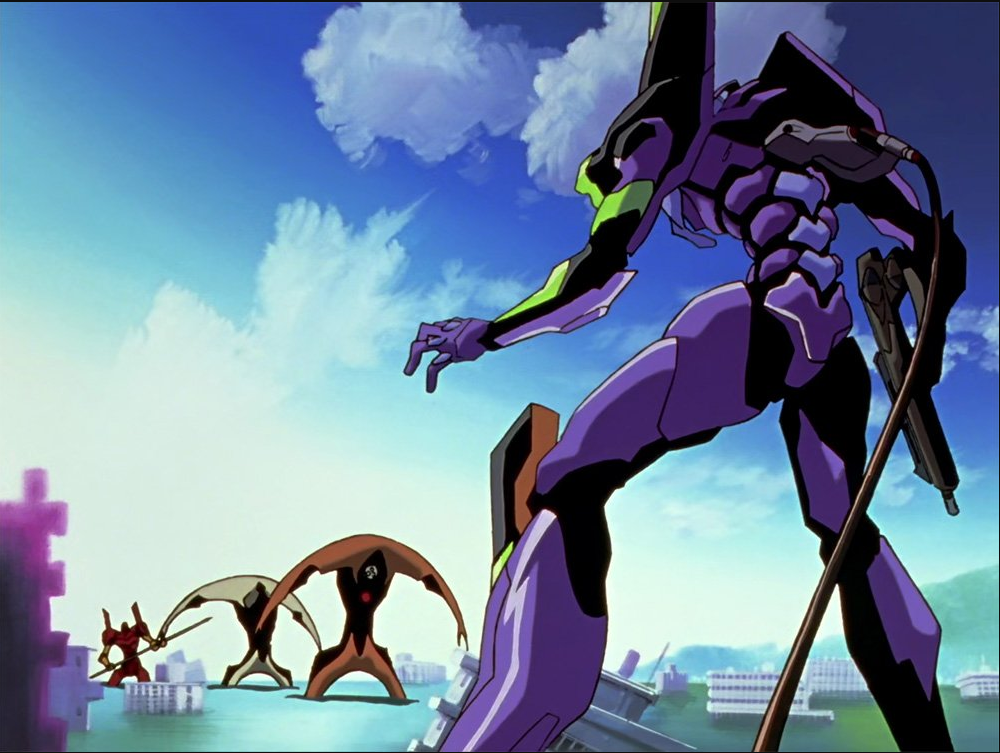
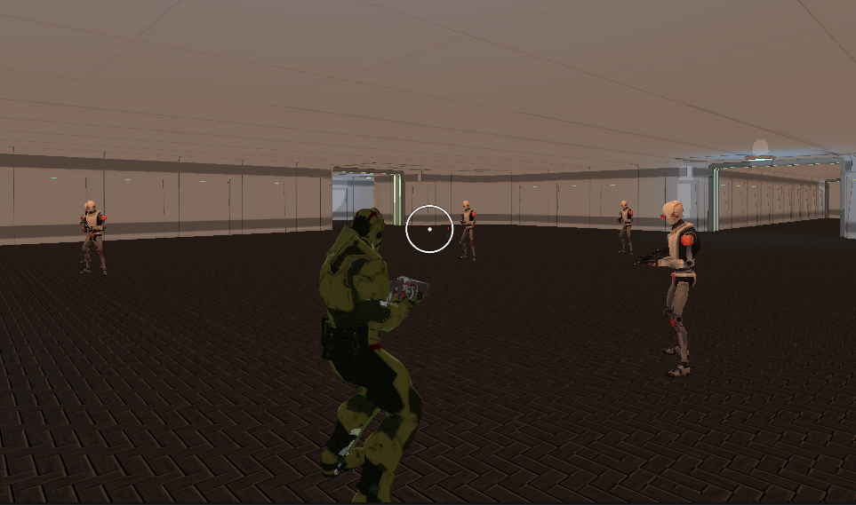
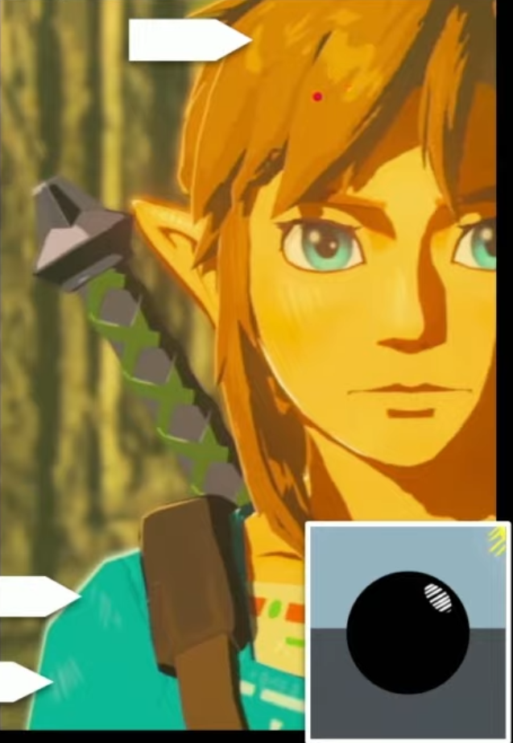

Download and play our project here! (Itch.io)
General video overviewing this project: Link
Video of gameplay: Link
Abstract
In this project, we implemented cel shading in Unity by applying ray tracing techniques we learned in class such as the Blinn-Phong model to Unity’s built-in shader API. We also expanded upon our base cel shader by adding directional illumination, specular reflection, and other features to improve its quality. Finally, to show off our polished shader, we created a Doom-style third person shooter using other topics in computer graphics such as hierarchical transforms, interpolation, and animation.
Link to Video Demonstration

|
|
|
Technical Approach
The Cel Shader
On a high level, cel shading, or toon shading, is a form of the Blinn-Phong shading model that defines a cutoff for an object’s shadows using ramping and offset values. This creates a discrete shading effect evocative of shading and coloring seen in 2D comics and cel shaded media, the latter of which cel shading originated from. In addition, cel shading employs rim-lighting on objects interacting with the main direction lighting source to simulate reflected light or backlighting, used in illustration to help the object's silhouette stand out among the flat shaded surfaces.
This basic model (rim lighting with two tone shading) is what we delivered in our milestone project report.
|

|
Our final cel shader goes one step further in adding specular reflection, which models the individual, distinct reflections made by light sources. This reflection is view dependent, in that it is affected by the angle that the surface is viewed at.

|
In simple terms, our cel shader works the same way as the fragmented or pixel shader as developed in project 4. However, in Unity, the base shader for the universal rendering pipeline is called a surface shader. Surface shaders are a code generation approach that handle the complexities of light as they relate to rendering paths, shadows, and type (direction, etc.). The surface shader compiler then figures out what inputs are needed, what outputs are filled and so on, and generates actual vertex pixel shaders, as well as rendering passes to handle forward and deferred rendering.
Deferred rendering refers to how Unity will split up rendering lighting and geometry, rendering lighting in a second pass after geometry to speed up computation. It does this by defining a “surface function” that takes any data you input and filling in an output structure called “SurfaceOutput”. SurfaceOutput describes the properties of the surface of the material (its albedo color, normal vector, emission, specularity etc.). In this manner, given the knowledge of the material and how it interacts with incident light, the base surface shader can calculate the object's interaction with directional lighting as shown in the image above.
Multi-tone shading
|
|
|
Directional Lighting
To begin, as stated prior, our cel shader builds off of the Blinn-Phong shading model we covered in class, which is also standard for Unity’s Universal Rendering Pipeline (URP). Our shader deviates from Blinn-Phong in having a number of specialized inputs to tweak the shader for cel shading: in addition to inputting the object’s surface normal, world position, and screen position, we also take in values that adjust the smoothness of our “toon ramp”, what color we should tint the object’s shadows, and where the cutoff should be between light and dark for the material. Using these values, we then calculate the ToonRampOutput, which determines the shading of the object at a specific point, and the Direction of the light hitting the object, used to create the rim lighting effect covered in the next section.
To calculate our ToonRampOutput, we dot product the surface normal and the light direction to see how much light the point on the object receives. The amount of light that bounces off of a given point is directly proportional to the dot product between the surface normal and light direction, and results in the following shading model:
From the above, we then use Unity’s smoothstep function to create a cutoff effect for our shadows. smoothstep is a type of interpolation similar to lerp, the latter of which we’ve used in class, though the main difference is that smoothstep is derived from hermite interpolation, gradually speeding up from its starting values, and slowing down at the end. Because of this unique property, we’re able to calculate a distinct border between light and dark. Additionally, our input values for the ramp’s shadow offset and smoothness modify where this light/dark border will appear and how sharp it will be. Increasing the smoothness parameter will make the model look more similar to the default Blinn-Phong shader, while increasing the shadow offset will increase the shaded area of the model.
|
|
|
|
|
|
|
|
After getting a value from calling smoothstep, we multiply this value by the shadows cast from our light sources, and then add the resulting color value to the color we’re tinting our shadows by. Finally, we take this sum and multiply it by the color of the lights in the scene and return the direction of these light sources for our rim lighting.
|

|
Rim Lighting
At this point in the project, we had two cel shaders: one that was incredibly basic and only worked with a directional light source (i.e. one light source) and another that incorporated Unity’s various other light sources into calculating its colors, along with taking in a normal map that could tell our shader where the surface normals on the texture should go.
To further improve the toonifying capabilities of our cell-shader, we proceeded to integrate rim-lighting to simulate back-lighting or fresnel reflections. The fresnel effect refers to the effect of different reflectance on an object's surface based on the view angle, wherein as the view angle gets closer to the grazing angle, more light is reflected off the surface (article detailing this). (Refer to image below)

|
{kind=link}
To implement rim-lighting, we compute the reflectance from the fresnel effect onto the object, and then mask, clamp, and smooth-step this to get the toonfied rim-lighting effect.
We defined the rim as illuminated surfaces that are facing away from the camera. In this manner, we calculate the rim by taking the dot product of the surface normal vector of the object and the inverse vector of view direction (in world space). This yields the surface normal vectors corresponding to the surfaces of the object that are facing away from the camera. At the same time, we calculate the dot-product of the light direction and inverse view direction. By taking the sum of these two dot products, we get the normal vectors corresponding to the surfaces on the object that point away from the camera and towards the light source by sum acute angle (parallel or almost parallel), i.e. are illuminated. We then clamp these values to avoid oversaturation, and then multiply it by the fresnel effect function. The resulting output is put through a smoothstep function, then multiplied by a brightness value to control the intensity of the rim-lighting effect, and finally added to the output from the multi-tone shading component of the cel shader for the final shader output (refer to image below for rim-light comparison on Doom character model).

|
The fresnel effect function implemented was based on the baseline Unity3D API (see below for function). It works by calculating the angle between the surface normal of the object and the view direction by taking their dot product. The output is then saturated between 0 and 1, and subtracted from 1 (inverting it). We then use the power function to scale this value to control how far the fresnel effect extends along the illuminated surface.
void Unity_FresnelEffect_float(float3 Normal, float3 ViewDir, float Power, out float Out){
Out = pow((1.0 - saturate(dot(normalize(Normal), normalize(ViewDir)))), Power);
}
Source
Ambient Lighting and Global Illumination
To go beyond just two-tone shading, or three-tone shading if rim-lighting is included, we would have to develop a complex shader pipeline that integrates multiple smoothstep functions and clipping or saturation functions to split the dual tone shading into additional gradients. This approach is complex, and would not be easy to quickly modify by artists who may wish to tweak the pipeline.
Thus, for our final cel shader, we decided to use an alternative method for multi-tone shading, to enable more than three tones of shading. Rather than using the smoothstep function, we instead converted from the RGB to HSV (Hue, Saturation, Value) colorspace. Thereby, we would have a single variable we could manipulate, the value component, and easily control the degree of shading applied to the surface.
First we integrated the normal map for the object, wherein the surface normal vector is blended using the Lerp function with a normal map and then normalized. Incorporating the normal map allows the artist to tell the shader where the surface normals on the texture should go to incorporate surface roughness and other features.
To apply the shading, we compute the brightness value of color for each surface by taking the dot product of the surface normal vector blended with the normal map and the light direction. This yields how much light every point on the surface of the object receives as with the previous multi-tone shading approach. The dot product output for all points of the surfaces of the object is referred to as a brightness map.
Taking this brightness map, we remap the values to be between 0 and 1, and then remap those values with a gradient. This is done by taking a custom sample gradient of values between 0 and 1 provided by the artist, and then remapping the values of the brightness map based on the corresponding values from the gradient map. We do this via a time/remapping (t) variable which substitutes the values in the brightness map with the corresponding values in the gradient map by sampling them at the corresponding time. For example, the remapping function takes values of 0, 0.5, and 1 in the brightness map, and substitutes them with the corresponding values in the gradient when sampled at t = 0, 0.5, and 1 respectively (or 0%, 50%, 100%, as gradient color positions are defined by percentage by the artist). The sample gradient uses HDR 32-bit precision, and is provided by the artist. The gradient itself includes the number of shades and the brightness for each shade (greyscale value between 0 and 1, or black to white, see the example gradient below).
|
|
Following the remap using gradient sampling, the brightness map is now multi-tone shaded. We then take the output from the baseline light model, modeled using blinn-phong shading as before, and convert from RGB to HSV colorspace. We replace the Value component with the shaded brightness map, and then convert back to RGB colorspace. The result is a full-color multi-tone cel shader that can do more than 3 tones of shading (refer to toon-shader V3 sections of the video demonstration or section 3.0 for examples of the color conversion method for multi-tone shading).
Specular Reflection
Like the approach used for multi-tone shading, specular reflections were similarly integrated into the cel shader. An existing light model is used to render the reflections, and then the specular reflection lighting is extracted from the light model using a mask. The specular lighting then has a smooth step function applied to it to give the toonified look. The final output is then multiplied by the specular color vector, and a brightness value to control the specular reflection color and brightness.
|
|
{kind=link}
The Unity rendering pipeline offers multiple shading models. As shown in the image below, the Lambert model has no specular component, while the Blinn and Phong models do. However, as discussed in lecture, the combined Blinn-Phong model is computationally less expensive and provides higher specular detail and highlighting. For this reason, the Blinn-Phong shader was chosen as the baseline shader on top of which the specular toonification was done.
|
|
{kind=link}
|
|
{kind=link}
Essentially, the specular reflections are modeled by the normalized half-way vector H, which bisects the vectors L and V in the diagram below, where L and V are the light vector and viewer direction vectors respectively (refer to diagram below). The specular highlight is then simply the dot product of the normalized half-way vector and the normal vector to the model raised to the alpha power, where alpha controls the intensity of the specular highlights. To avoid oversaturation, before the exponentiation, the output from the dot product is first saturated between 0 and 1.
|
|
{kind=link}
In order to be able to extract the specular component from the diffusion and brightness components of the lighting model (diffusion and shadows), the three components were calculated separately. The specular component was additively computed using the the LightingSpecular function from Unity Scripting API for both the main ambient light as well any additional direction and point sources of light using a for loop. Thus, this is what we did in the code to calculate this component:
// Color; color of light source
// Direction; normalized direction vector of light source
// WorldNormal; normalized Normal vector from material surface in world space
// WorldView; normalized viewer direction vector in world space
// SpecularColor; color of specular reflection
// Smoothness; smoothness of material surface, used in conjunction with normal maps to control intensity of specular reflection
specular += LightingSpecular(Color, Direction, WorldNormal, WorldView, SpecularColor, Smoothness);
World space refers to the coordinate space representing the scene, whose origin is defined by the scene, in contrast to object space, representing the coordinate space whose origin is defined with respect to just the object.
The the specular component of the model is separately outputted in order to be inputted into a smooth-step function (similar to the one used in multi-tone shading), and then multiplied by a specular brightness variable to control the opacity of the specular component, to avoid oversaturating the shading on the character (see example below).
|
|
|
Adding Patterning to the Spectral Reflections
|

|
As seen in the above character from the game, The Legend of Zelda: Breath of the Wild, many toonifying cel shaders also include patterning stripes on the specular reflections, in place of simply solid highlights. This is in order to portray a rough surface, as the standard smooth-step function gets rid of any roughness shown in the spectral highlighting component of the light model by an overriding smoothing function.
To integrate this in our cel shader, we created a png of the stripe pattern used, and then rotated and tiled the pattern across the entire screen to create a 2D texture, with variables to control the degree of rotation and the pattern size for tiling. The spectral component output from the light model was then multiplied by this texture, whose product was then imputed into the previous smooth-step pipeline. This approach was used to enable an artist to control the pattern used for the spectral component, and change it between various models in the game. This approach led to the following spectral reflections on the model.
|
|
The final output from the smooth-step pipeline of the spectral component was integrated into the final output of our toon-shader, by adding it to the outputs from the rim-lighting and multi-toe shading components of our cel shader (refer to section 3.0 for the final results of our cel shader).
Adding Patterning to the Spectral Reflections
One of the challenges that cel shading faces is with rendering water: since cel shading generally creates opaque colors, water’s transparent, yet colorful properties make it up to the project’s art direction for how it is rendered. In addition, rendering all the physics of water to make it realistic not only wasn’t in our project description, but it isn’t necessary and can clash with the aesthetic that cel shading provides.
Traditionally, cel-shaded games get around this by using geometry and high resolution textures in creative ways. Most famously, The Legend of Zelda: The Wind Waker’s “Great Sea” employs a variety of methods to render its ocean, none of which actually render the water in a “realistic” way as we’ve covered in this class. The boat’s wake is a texture, and the boat cuts through the water by spawning two wave-shaped polygons whose sizes increase and decrease depending on the boat’s direction.

|
The water in our game follows the traditional game development mantra of “if it looks good enough, it is good enough”. It is rendered using two tiling water textures imposed on a plane that pass over each other ad infinium to create an illusion of water flowing, without the computational drawbacks of actually having to render and calculate the physics of that much water flowing. One of the textures moves up and to the right, while the other moves down and to the left. The shader also has the ability to set the depth of the water and its shallowness, creating a gradient effect where the water goes from deep to shallow, as shown below. The shader itself also has the ability to create waves on the surface of the plane mesh used for the water, allowing for more dynamic effects.
While not nearly as polished as The Great Sea, for our purposes, it is good enough, and like all the shaders and assets we’ve assembled for this project, has the potential to be used in other games we go on to create in the future.
|
|
Additionally, we implemented an exceedingly simple glass shader to get around the fact that our cel shader only really works with opaque objects. One drawback of our game is that the player’s Z position is fixed (it cannot jump or fall). Thus, to showcase water in our level, we decided to make it so the water was blocked off by glass flooring beneath the player’s feet. What the glass in this case does is take the position of the camera and creates a glare if the player is not looking at the glass from certain angles specifically it creates a white glare which we would see from most glass given a white light hits it.
|
|
Results
Video Demonstration
Animated Gifs and/or Images of Toonshader

|
|
|
|
|
|
|
References
Used Unity Engine version 2021.2.19f1. Rendered with Unity's Universal Rendering Pipeline.
General tutorials consulted:
- Unity shader tutorial - https://learn.unity.com/tutorial/writing-your-first-shader-in-unity?uv=5.x#5c7f8528edbc2a002053b570
- "Stylized Highlights for Cartoon Rendering and Animation" - https://citeseerx.ist.psu.edu/viewdoc/download?doi=10.1.1.218.6114&rep=rep1&type=pdf
- Advanced Real-‐Time Cel Shading Techniques in OpenGL - https://www.cs.rpi.edu/~cutler/classes/advancedgraphics/S12/final_projects/hutchins_kim.pdf
Tutorials/Walkthroughs specific to cel shading in Unity:
- How we built the toon shading | Open Projects Devlog (by Unity) - https://www.youtube.com/watch?v=GGTTHOpUQDE
- Toon Shading - The EASIEST WAY! Unity3D URP Shadergraph Tutorial (Léo Chaumartin) - https://www.youtube.com/watch?v=Rn_yJ516dVQ
- Creating a Cel-Shading Toon Shader (by GamesPlusJames) - https://www.youtube.com/watch?v=3SvyJrENsgc
- Unity | Making a Lit Toon Shader in Shader Graph (by MinionsArt) - https://www.youtube.com/watch?v=FIP6I1x6lMA
- Learn stylized shading with Shader Graph - Unite Copenhagen (by Unity) - https://www.youtube.com/watch?v=DOLE4nrK97g
- How to make Water Shader in Unity with URP! (Tutorial) - https://www.youtube.com/watch?v=FWO4k4-vXXA
Other Resources
- Make a Third Person Camera and Movement Controller in 7 Minutes | Unity Tutorial (or Download) - https://youtu.be/7nxpDwnU0uU
- How to Make the Camera See Through Walls | Unity Tutorial (and File Download) - https://youtu.be/wWyx7_cIxP8?t=189
- How to Animate Characters in Unity 3D | Two Dimensional Blend Trees Explained - https://youtu.be/W0eRZGS6dhQ
- Doom-esque model + animations obtained from https://www.mixamo.com/#/
- VGDD 3D Base Project - https://github.com/berkeleyGamedev/3DTutorialBase
Unity Asset Store
- Shotgun model - https://assetstore.unity.com/packages/3d/props/guns/shotgun-26685#description
- Space Robot Kyle model - https://assetstore.unity.com/packages/3d/characters/robots/space-robot-kyle-4696#description
- Rifle model - https://assetstore.unity.com/packages/3d/props/guns/rifle-25668#description
- Handpainted Keys Model - https://assetstore.unity.com/packages/3d/handpainted-keys-42044#description
- 3D Free Modular Kit - https://assetstore.unity.com/packages/3d/environments/3d-free-modular-kit-85732
- Yughues Free Metal Materials - https://assetstore.unity.com/packages/2d/textures-materials/metals/yughues-free-metal-materials-12949
Team Credits
Kevin Ponce:
- Recreated a simple level from Doom
- Added a flash to the weapon
- Recreated a glass shader
- Created video and took screenshots for final writeup
- Composed website's initial HTML
Lena Jeon:
- Project coordinator, team manager, came up with the project idea
- Toon Shader versions 1 and 2 (used in the project milestone and as basis for version 3)
- Water shader
- Writeup: General edits, finalized HTML, wrote the Water Shader and Toon Shader v1 & v2 sections
Henry La:
- Improved player movement
- Added camera obstruction detection and vertical movement
- Created animation blend trees and layering
- Implemented combat and shooting system
- Coded enemy AI
Hamza Mohammed:
- Toonshader version 3 with specular reflections, rim lighting, and multi-tone shading
- Modified cel shader to include stripped pattern specular reflections and use color conversion method for shading
- Writeup: Contributed to the technical approach section (high level overview, rim-lighting, specular reflections, comparison of cel shaders, and edits to section 2.1)